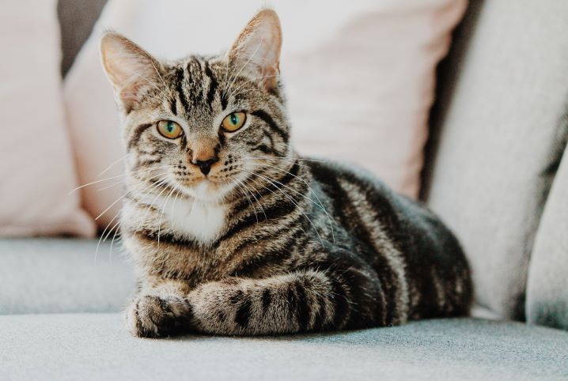

Os gatos são animais fofinos. Os gatos são animais fofinos. Os gatos são animais fofinos. Os gatos são animais fofinos .Os gatos são animais fofinos.Os gatos são animais fofinos. Os gatos são animais fofinos. Os gatos são animais fofinos. Os gatos são animais fofinos. Os gatos são animais fofinos. Os gatos são animais fofinos. Os gatos são animais fofinos.

os cachorros são animais muito mais fofinhos. os cachorros são animais muito mais fofinhos. os cachorros são animais muito mais fofinhos. os cachorros são animais muito mais fofinhos.os cachorros são animais muito mais fofinhos.os cachorros são animais muito mais fofinhos. os cachorros são animais muito mais fofinhos. os cachorros são animais muito mais fofinhos. os cachorros são animais muito mais fofinhos. os cachorros são animais muito mais fofinhos. os cachorros são animais muito mais fofinhos. os cachorros são animais muito mais fofinhos. os cachorros são animais muito mais fofinhos. os cachorros são animais muito mais fofinhos. os cachorros são animais muito mais fofinhos.